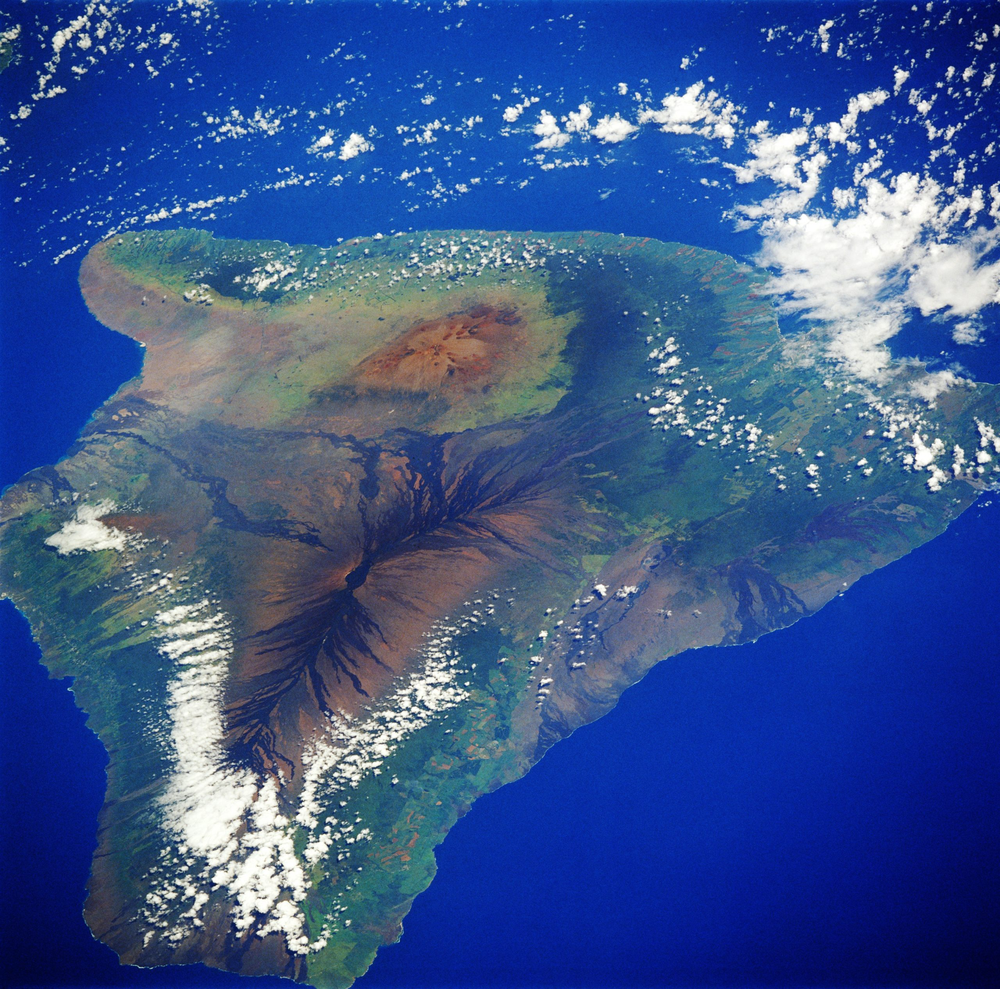
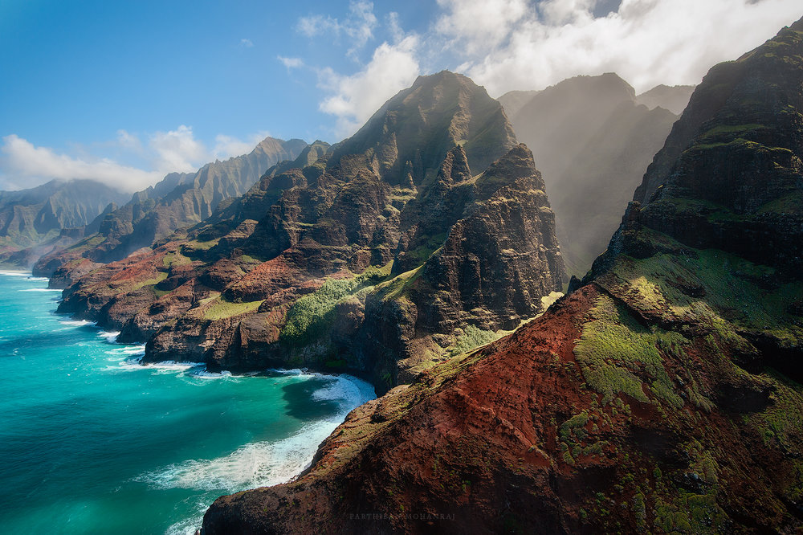
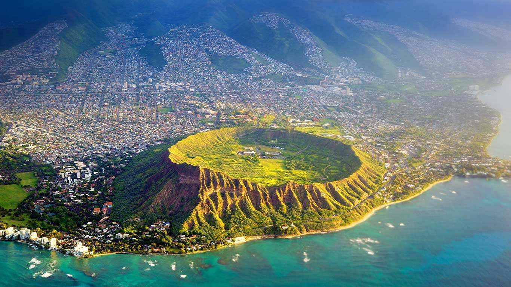

ISLAS PRINCIPALES DE HAWAI
| NOMBRE | DESCRIPCION | IMAGEN |
|---|
| Big Island |
Es la isla más grande y de esta forma se evita la confusión entre el nombre de la isla y del estado. Administrada por el condado de Hawái, cuya capital es Hilo. Se estima que en el año 2003, la isla contaba con una población residente de 158.400 personas. Fuente:https://es.wikipedia.org/wiki/Isla_de_Haw%C3%A1i |
 |
| Niʻihau |
Es la isla habitada más pequeña del archipiélago de Hawái. Tiene un área de 1084 km². Es una de las islas más antiguas de todo el archipiélago. Esto se debe a que Niʻihau se formó por una abertura secundaria posterior a la erupción del volcán de Kauaʻi. Fuente:https://es.wikipedia.org/wiki/Ni%CA%BBihau |
 |
| Kauaʻi |
Es la más antigua y la cuarta en tamaño de las islas principales del archipiélago de Hawái, con una superficie de 1.430,43 km². También es conocida como "Isla Jardín" o "Garden Isle". Está ubicada en la posición 22°05′N 159°30′O. Es una isla montañosa de origen volcánico, siendo el punto más elevado el pico Kawaikini de 1.598 m (5.243 pies) sobre el nivel del mar, seguido del Mount Wai‘ale‘ale cerca del centro de la isla, de 1.570 m (5.148 pies). Es uno de los lugares más húmedos de la Tierra. Fuente:https://es.wikipedia.org/wiki/Kauai |
 |
| Oahu |
Es la isla más poblada de Hawái. La ciudad más grande es Honolulu, la capital del estado. Toda la isla está bajo la administración de la Ciudad y Condado de Honolulú, aunque la ciudad en sí solo ocupa una parte al sureste de la isla. La altitud máxima se da en el Mount Kaʻala de Waiʻanae con 1.225 m sobre el nivel del mar. con una superficie total de 2.545,3 km² es la tercera isla más grande del archipiélago de Hawái. En el censo de 1600 la población total era de 1.876.156 habitantes, un 35% aproximadamente del total del estado. Fuente:https://es.wikipedia.org/wiki/Oahu |
 |